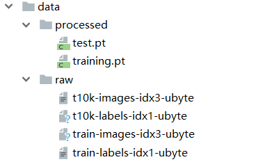

深度学习
1.1 深度学习和神经网络
1.1.1 深度学习简介
概念
深度学习deep learning是机器学习的分支，是一种以人工神经网络为架构，对数据进行特征学习的算法
机器学习和深度学习的区别：
从特征提取的角度出发：
机器学习需要有人工的特征提取的过程
深度学习中特征提取的过程可以通过深度神经网络自动完成
从数据量的角度出发：
深度学习需要大量的训练数据集，会有更好的效果
深度学习训练有更多的参数的深度神经网络需要大量的算力
应用场景
图像识别
自然语言处理技术
语音技术
1.1.2 神经网络简介
概念
人工神经网络Artificial Neural Network，简称神经网络Neural Network或类神经网络，是一种模仿生物神经网络的结构和功能的数学模型，用于对函数进行估计或近似。
神经元
1943 年，McCulloch 和 Pitts 将生物的神经网络抽象为一个简单模型，即 M-P 神经元模型。把许多这样的神经元按一定的层次结构连接起来，就得到神经网络。

- $a_1,a_2\dots a_n$ 为各个输入的分量
- $w_1,w_2 \cdots w_n$ 为各个输入分量对应的权重参数
- $b$ 为偏置
- $f$ 为激活函数，常见的激活函数有
tanh，sigmoid，relu - $t$ 为神经元的输出
一个神经元的功能是求得输入向量与权向量的内积后，经一个非线性传递函数得到一个标量结果，数学公式表示：
$$
t = f(W^TA+b)
$$
单层神经网络
最基本的神经元网络形式，由有限个神经元构成，所有神经元的输入向量都是同一个向量。单层神经元的输出是一个向量，向量的维数等于神经元的数目。
感知机
感知机由两层神经网络组成，输入层接收外界输入信号后传递给输出层（输出 +1正例，-1反例），输出层是 M-P 神经元。
感知机的作用
简单的二分类模型，把一个n维向量空间用一个超平面分割成两部分，给定一个输入向量，超平面可以判断出这个向量位于超平面的哪一边，得到输入正类或者是反类，对应到2维空间就是一条直线把一个平面分为两个部分。

多层神经网络
多层神经网络由单层神经网络叠加得到，所以形成了层的概念，常见的多层神经网络有如下结构。
输入层
Input layer，众多神经元接受大量输入消息。（输入的消息称为输入向量）输出层
Output layer，消息在神经元链接中传输、分析、权衡，形成输出结果。（输出的消息称为输出向量）隐藏层
Hidden layer，是输入层和输出层之间众多神经元和链接组成的各个层面。隐层可以有一层或多层。隐层的节点数目不定，但数目越多神经网络的非线性越显著，从而神经网络的强健性更显著。
全连接层
当前一层和前一层每个神经元相互链接，称当前这一层为全连接层
全连接层就是在前一层的输出的基础上进行一次 $Y=Wx+b$ 的变化（不考虑激活函数的情况下就是一次线性变化）
激活函数
激活函数很重要的一个作用就是增加模型的非线性分割能力
如果在感知机的基础上加上非线性的激活函数之后，输出的结果就不再是一条直线

如果给定合适的参数 $w$ 和 $b$ ，就可以得到合适的曲线，能够完成对最开始问题的非线性分割

sigmoid只会输出正数，以及靠近0的输出变化率最大tanh输出可以是负数Relu是输入只能大于0，常用于输入是图片格式，因为图片的像素值作为输入时取值为[0,255]
激活函数的作用：
增加模型的非线性分割能力
提高模型鲁棒性
缓解梯度消失问题
加速模型收敛
深度学习的思想:
通过模型来进行特征工程，进行更加高级特征的学习，然后通过传入的数据来确定合适的参数，让模型去更好的拟合数据。
1.1.3 梯度下降
梯度是什么?
机器学习中构建机器学习模型$f$，得到$f(x,w) = Y_{predict}$
判断模型好坏的方法：
回归损失 $loss = (Y_{predict}-Y_{true})^2$
分类损失 $loss = Y_{true} \cdot log(Y_{predict})$
目标：通过调整参数$w$，尽可能的降低$loss$
随机选择一个起始点$w_0$,通过调整$w_0$，让$loss$函数取到最小值
$w$的更新方法：
- 计算$w$的梯度
$$
\nabla w = \frac{f(w+0.000001)-f(w-0.000001)}{2*0.000001}
$$
- 更新$w$
$$
w = w - \alpha \nabla w
$$
其中：
- $\nabla w <0 $ ,意味着w将增大
- $\nabla w >0 $ ,意味着w将减小
总结：梯度就是多元函数参数的变化趋势，只有一个自变量时称为导数
偏导的计算
常见的导数计算
多项式求导数：$f(x) = x^5$ ,$f^{‘}(x) = 5x^{(5-1)}$
基本运算求导：$f(x) = xy$ ，$f^{‘}(x) = y$
指数求导：$f(x) = 5e^x$ ，$f^{‘}(x) = 5e^x$
对数求导：$f(x) = 5lnx$ ，$f^{‘}(x) = \frac{5}{x}$
导数的微分形式：$f^{‘}(x) = \frac{d f(x)}{dx}$
多元函数求偏导
多元函数，即有多个自变量。如$f(x,y,z)$
多元函数求偏导过程中：对某一个自变量求导，其他自变量当做常量即可
1.1.4 反向传播算法
计算图和反向传播
计算图：通过图的方式来描述函数的图形
$J(a,b,c) = 3(a+bc),令u=a+v,v = bc$，绘制成计算图可以表示为：

对每个节点求偏导可有：

自变量$a,b,c$各自的偏导就是连线上的梯度的乘积：
$$
\frac{dJ}{da} = 3 \cdot 1 \\
\frac{dJ}{db} = 3 \cdot 1 \cdot c \\
\frac{dJ}{dc} = 3 \cdot 1 \cdot b
$$
神经网络的反向传播
神经网络示意图

$w1,w2,….wn$表示网络第n层权重
$w_n[i,j]$表示第n层第i个神经元，连接到第n+1层第j个神经元的权重
神经网络计算图

其中：
- $\nabla out$是根据损失函数对预测值进行求导得到的结果
- $f$函数可以理解为激活函数
问题：那么此时$w_1[1,2]$的偏导该如何求解？
通过观察，发现从$out$ 到$w_1[1,2]$的来连接线有两条

公式分为两部分：左边红线部分（右边红线部分 + 蓝线部分），结果：
$$
\frac{dout} {dW_1[1,2]} = x1 \cdot f’(a2) \cdot ( W_2[2,1] \cdot f’(b1) \cdot W_3[1,1] \cdot \nabla out +W_2[2,2] \cdot f’(b2) \cdot W_3[2,1] \cdot \nabla out)
$$
但是当模型很大的时候，计算量非常大，所以反向传播的思想就是对其中的某一个参数单独求梯度之后更新，如下图所示：

计算过程如下
$$
\begin{array}{c}
\nabla W_3[1,1] = f(b_1) \cdot \nabla out \\
\nabla W_3[2,1] = f(b_2) \cdot \nabla out \\
\nabla b_1= f’(b_1) \cdot W_3[1,1] \cdot \nabla out \\
\nabla b_2= f’(b_2) \cdot W_3[2,1] \cdot \nabla out
\end{array}
$$
更新参数之后，继续反向传播

计算过程如下：
$$
\begin{array}{c}
\nabla W_2[1,2] = f(a_1)\cdot \nabla b_2 \\
\nabla a_2 = f’(a_2)\cdot (w_2[2,1]\nabla b_1 +W_2[2,2] \nabla b_2)
\end{array}
$$
继续反向传播

计算过程如下：
$$
\begin{array}{c}
\nabla W_1[1,2]= x_1\cdot \nabla a_2 \\
\nabla x_1 = (W_1[1,1]\cdot \nabla a_1+w_1[1,2]\cdot \nabla a_2)
\end{array}
$$
通用的描述如下：
$$
\nabla w^l_{i,j} = f(a^l_i)\cdot \nabla a^{i+1}_{j}
$$
$$
\nabla a^l_i = f’(a^l_i)\cdot (\sum_{j=1}^m w_{i,j}\cdot \nabla a_j^{l+1})
$$
1.2 PyTorch
1.2.1 PyTorch实现线性回归
向前计算
对于pytorch中的一个tensor，如果设置它的属性 .requires_grad为True，那么它将会追踪对于该张量的所有操作。或者可以理解为，这个tensor是一个参数，后续会被计算梯度，更新该参数。
计算过程
假设有以下条件（1/4表示求均值，xi中有4个数），使用torch完成其向前计算的过程
$$
\begin{array}{c}
&o = \frac{1}{4}\sum_iz_i \\
&z_i = 3(x_i+2)^2\\
其中:&z_i|_{x_i=1}=27
\end{array}
$$
如果$x$为参数，需要对其进行梯度的计算和更新，那么在最开始随机设置$x$的值的过程中，需要设置他的requires_grad属性为True，其默认值为False
import torch
x = torch.ones(2, 2, requires_grad=True) #初始化参数x并设置requires_grad=True用来追踪其计算历史
print(x)
#tensor([[1., 1.],
# [1., 1.]], requires_grad=True)
y = x+2
print(y)
#tensor([[3., 3.],
# [3., 3.]], grad_fn=<AddBackward0>)
z = y*y*3 #平方x3
print(x)
#tensor([[27., 27.],
# [27., 27.]], grad_fn=<MulBackward0>)
out = z.mean() #求均值
print(out)
#tensor(27., grad_fn=<MeanBackward0>)$x$的requires_grad属性为True之后的每次计算都会修改其grad_fn属性，用来记录做过的操作
requires_grad和grad_fn
a = torch.randn(2, 2)
a = ((a * 3) / (a - 1))
print(a.requires_grad) #False
a.requires_grad_(True) #修改
b = (a * a).sum()
print(b.grad_fn) # <SumBackward0 object at 0x4e2b14345d21>
with torch.no_gard():
c = (a * a).sum() #tensor(151.6830),此时c没有gard_fn
print(c.requires_grad) #False注意：
防止跟踪历史记录和使用内存，可以将代码块包装在with torch.no_grad():中，这在评估模型时有用，因为模型可能具有requires_grad = True的可训练的参数，但是我们不需要在此过程中对他们进行梯度计算。
1.6.2 梯度计算
可以使用backward方法来进行反向传播，计算梯度out.backward(),此时便能够求出导数$\frac{d out}{dx}$,调用x.gard能够获取导数值
得到
tensor([[4.5000, 4.5000],
[4.5000, 4.5000]]) 因为：
$$
\frac{d(O)}{d(x_i)} = \frac{3}{2}(x_i+2)
$$
在$x_i$等于1时其值为4.5
注意：
在输出为一个标量的情况下，我们可以调用输出
tensor的backword()方法，但是在数据是一个向量的时候，调用backward()的时候还需要传入其他参数。loss.backward()就是根据损失函数，对参数为（requires_grad=True）的去计算梯度，并且累加保存到x.gard，此时还并未更新其梯度，所以每次反向传播之前需要先把梯度置为0后tensor.data：require_grad=False时，tensor.data和tensor等价
require_grad=True时，tensor.data仅仅是获取tensor中的数据
tensor.numpy()：- require_grad=True不能够直接转换，需要使用
tensor.detach().numpy()，能够实现对数据的深拷贝
- require_grad=True不能够直接转换，需要使用
1.6.3 线性回归
使用自定义的数据，使用Torch实现一个简单的线性回归
假设基础模型是$y = wx+b$，其中$w$和$b$均为参数，使用$y = 3x+0.8$来构造数据，最后通过模型应该能够得出$w$和$b$应该分别接近3和0.8
- 准备数据
- 计算预测值
- 计算损失，把参数的梯度置为0，进行反向传播
- 更新参数
import torch
import numpy as np
from matplotlib import pyplot as plt
#1. 准备数据
x = torch.rand([50])
y = 3*x + 0.8
w = torch.rand(1,requires_grad=True)
b = torch.rand(1,requires_grad=True)
def loss_fn(y,y_predict):
loss = (y_predict-y).pow(2).mean()
for i in [w,b]:
#每次反向传播前把梯度置为0
if i.grad is not None:
i.grad.data.zero_()
# [i.grad.data.zero_() for i in [w,b] if i.grad is not None]
loss.backward()
return loss.data
def optimize(learning_rate):
w.data -= learning_rate* w.grad.data
b.data -= learning_rate* b.grad.data
for i in range(3000):
#2. 计算预测值
y_predict = x*w + b
#3.计算损失，把参数的梯度置为0，进行反向传播
loss = loss_fn(y,y_predict)
if i%500 == 0:
print(i,loss)
#4. 更新参数w和b
optimize(0.01)
# 绘制图形，观察训练结束的预测值和真实值
predict = x*w + b #使用训练后的w和b计算预测值
plt.scatter(x.data.numpy(), y.data.numpy(),c = "r")
plt.plot(x.data.numpy(), predict.data.numpy())
plt.show()
print("w",w)
print("b",b)图形效果如下：

# 打印w和b
w tensor([2.9280], requires_grad=True)
b tensor([0.8372], requires_grad=True)
1.2.2 PyTorch完成基础模型
常用API
在pytorch中预设了一些更加灵活简单的对象，让我们来构造模型、定义损失，优化损失等
nn.Module
nn.Modul 是torch.nn提供的一个类，是pytorch中自定义网络的一个基类，在这个类中定义了很多方法让继承这个类定义网络的时候非常简单
自定义网络的时候，有两个方法需要特别注意：
__init__需要调用super方法，继承父类的属性和方法farward方法必须实现，用来定义我们的网络的向前计算的过程
前面的$y = wx+b$的模型举例如下：
from torch import nn
class Lr(nn.Module):
def __init__(self):
super(Lr, self).__init__() #继承父类init的参数
self.linear = nn.Linear(1, 1)
def forward(self, x):
out = self.linear(x)
return out注意：
nn.Linear为预定义好的线性模型，也称为全链接层，传入的参数为输入的数量，输出的数量(in_features, out_features)nn.Module定义了__call__方法，实现的就是调用forward方法，即Lr的实例，能够直接被传入参数调用，实际上调用的是forward方法并传入参数
# 实例化模型
model = Lr()
# 传入数据，计算结果
predict = model(x)
优化器类
优化器optimizer可以理解为torch为我们封装的用来进行更新参数的方法，比如常见的SGD、Adam
注意：
参数可以使用
model.parameters()来获取，获取模型中所有requires_grad=True的参数优化类的使用方法
实例化
所有参数的梯度，将其值置为0
反向传播计算梯度
更新参数值
# 示例
optimizer = optim.SGD(model.parameters(), lr=1e-3) #1. 实例化
optimizer.zero_grad() #2. 梯度置为0
loss.backward() #3. 计算梯度
optimizer.step() #4. 更新参数的值
损失函数
- 均方误差:
nn.MSELoss(),常用于回归问题 - 交叉熵损失：
nn.CrossEntropyLoss()，常用于分类问题
使用方法：
model = Lr() #1. 实例化模型
criterion = nn.MSELoss() #2. 实例化损失函数
optimizer = optim.SGD(model.parameters(), lr=1e-3) #3. 实例化优化器类
for i in range(100):
y_predict = model(x_true) #4. 向前计算预测值
loss = criterion(y_true,y_predict) #5. 调用损失函数传入真实值和预测值，得到损失结果
optimizer.zero_grad() #5. 当前循环参数梯度置为0
loss.backward() #6. 计算梯度
optimizer.step() #7. 更新参数的值
完整代码：
import torch
from torch import nn
from torch import optim
import numpy as np
from matplotlib import pyplot as plt
# 1. 定义数据
x = torch.rand([50,1])
y = x*3 + 0.8
#2 .定义模型
class Lr(nn.Module):
def __init__(self):
super(Lr,self).__init__()
self.linear = nn.Linear(1,1)
def forward(self, x):
out = self.linear(x)
return out
# 2. 实例化模型，loss，和优化器
model = Lr()
criterion = nn.MSELoss()
optimizer = optim.SGD(model.parameters(), lr=1e-3)
#3. 训练模型
for i in range(30000):
out = model(x) #3.1 获取预测值
loss = criterion(y,out) #3.2 计算损失
optimizer.zero_grad() #3.3 梯度归零
loss.backward() #3.4 计算梯度
optimizer.step() # 3.5 更新梯度
if (i+1) % 20 == 0:
print('Epoch[{}/{}], loss: {:.6f}'.format(i,30000,loss.data))
#4. 模型评估
model.eval() #设置模型为评估模式，即预测模式
predict = model(x)
predict = predict.data.numpy()
plt.scatter(x.data.numpy(),y.data.numpy(),c="r")
plt.plot(x.data.numpy(),predict)
plt.show()输出如下：

注意：
model.eval()表示设置模型为评估模式，即预测模式
model.train(mode=True) 表示设置模型为训练模式
在当前的线性回归中，上述并无区别，但是在其他的一些模型中，训练的参数和预测的参数会不相同，到时候就需要具体告诉程序我们是在进行训练还是预测，比如模型中存在Dropout，BatchNorm时
1.7.2 在GPU上运行代码
当模型太大或者参数太多的情况下，为了加快训练速度，经常会使用GPU来进行训练，此时我们的代码需要稍作调整：
判断GPU是否可用
torch.cuda.is_available()把模型参数和input数据转化为cuda的支持类型
model.to(device) x_true.to(device)在GPU上计算结果也为cuda的数据类型，需要转化为numpy或者tensor类型
predict = predict.cpu().detach().numpy()
完整代码：
import torch
from torch import nn
from torch import optim
import numpy as np
from matplotlib import pyplot as plt
import time
# 1. 定义数据
x = torch.rand([50,1])
y = x*3 + 0.8
#2 .定义模型
class Lr(nn.Module):
def __init__(self):
super(Lr,self).__init__()
self.linear = nn.Linear(1,1)
def forward(self, x):
out = self.linear(x)
return out
# 2. 实例化模型，loss，和优化器
device = torch.device("cuda:0" if torch.cuda.is_available() else "cpu")
x,y = x.to(device),y.to(device)
model = Lr().to(device)
criterion = nn.MSELoss()
optimizer = optim.SGD(model.parameters(), lr=1e-3)
#3. 训练模型
for i in range(300):
out = model(x)
loss = criterion(y,out)
optimizer.zero_grad()
loss.backward()
optimizer.step()
if (i+1) % 20 == 0:
print('Epoch[{}/{}], loss: {:.6f}'.format(i,30000,loss.data))
#4. 模型评估
model.eval() #
predict = model(x)
predict = predict.cpu().detach().numpy() #转化为numpy数组
plt.scatter(x.cpu().data.numpy(),y.cpu().data.numpy(),c="r")
plt.plot(x.cpu().data.numpy(),predict,)
plt.show()
1.7.3 常见的优化算法介绍
梯度下降法
batch gradient descent
每次迭代都需要把所有样本都送入，这样的好处是每次迭代都顾及了全部的样本，做的是全局最优化，但是有可能达到局部最优。
随机梯度下降法
Stochastic gradient descent
针对梯度下降算法训练速度过慢的缺点，提出了随机梯度下降算法。
算法从样本中随机抽出一组，训练后按梯度更新一次，然后再抽取一组，再更新一次，在样本量及其大的情况下，可能不用训练完所有的样本就可以获得一个损失值在可接受范围之内的模型了。
torch API：torch.optim.SGD()
小批量梯度下降法
Mini-batch gradient descent
SGD也存在问题，由于单个样本的训练可能会带来很多噪声，使得SGD并不是每次迭代都向着整体最优化方向，因此在刚开始训练时可能收敛得很快，但是训练一段时间后就会变得很慢。在此基础上又提出了小批量梯度下降法，它是每次从样本中随机抽取一小批进行训练，而不是一组，这样即保证了效果又保证的速度。
动量法
Momentum
MSGD算法虽然能带来很好的训练速度，但是在到达最优点的时候并不能够总是真正到达最优点，而是在最优点附近徘徊。另一个缺点是算法需要一个合适的学习率。当我们采用小的学习率的时候，会导致网络在训练的时候收敛太慢；当我们采用大的学习率的时候，会导致在训练过程中优化的幅度跳过函数的范围，也就是可能跳过最优点。我们所希望的仅仅是网络在优化的时候网络的损失函数有一个很好的收敛速度同时又不至于摆动幅度太大。
Momentum优化器可以解决问题，它主要是基于梯度的移动指数加权平均，对网络的梯度进行平滑处理的，让梯度的摆动幅度变得更小。
$$
\begin{array}{c}
&gradent = 0.8 \nabla w + 0.2 history\_gradent &\\
&w = w - \alpha \cdot gradent &
\end{array}
$$
注：t+1的的histroy_gradent 为第t次的gradent
AdaGrad
AdaGrad算法就是将每一个参数的每一次迭代的梯度取平方累加后在开方，用全局学习率除以这个数，作为学习率的动态更新，从而达到自适应学习率的效果
$$
\begin{array}{c}
&gradent = history_gradent + (\nabla w)^2 \\
&w = w - \frac{\alpha}{\sqrt{gradent}+\delta} \nabla w
\end{array}
$$
注：$\delta$为小常数，为了数值稳定大约设置为$10^{-7}$
RMSProp
为了进一步优化损失函数在更新中存在摆动幅度过大的问题，并进一步加快函数的收敛速度，RMSProp算法对参数的梯度使用了平方加权平均数。
$$
\begin{array}{c}
& gradent = 0.8 \cdot history_gradent + 0.2 \cdot (\nabla w)^2 \\
& w = w - \frac{\alpha}{\sqrt{gradent}+\delta} \nabla w
\end{array}
$$
Adam
Adaptive Moment Estimation
Adam算法是将Momentum算法和RMSProp算法结合起来使用的一种算法，能够防止梯度的摆幅过大，同时还能够加收敛速度
$$
\begin{array}{c}
& v_w = 0,s_w = 0 \\
& v_w = 0.8v + 0.2 \nabla w \qquad \\
& s_w = 0.8s + 0.2(\nabla w)^2 \qquad \\
& w = w - \frac{\alpha}{\sqrt{s_w}+\delta} v_w
\end{array}
$$
- 需要初始化梯度的累积量和平方累积量
- 第 t 轮训练中可以计算得到
Momentum和RMSProp的参数更新 - 对其中的值进行处理后
torch API：torch.optim.Adam()
1.8 PyTorch数据加载
1.8.1 模型中使用数据加载器的目的
在深度学习中，数据量通常非常大，不可能一次性的在模型中进行向前的计算和反向传播。我们经常会对整个数据随机打乱顺序，把数据处理成一个个batch，同时还会对数据进行预处理。
1.8.2 数据集类
Dataset基类介绍
torch中提供了数据集基类torch.utils.data.Dataset，继承这个基类，我们能够非常快速的实现对数据的加载。
torch.utils.data.Dataset源码：
class Dataset(object):
"""An abstract class representing a Dataset.
All other datasets should subclass it. All subclasses should override
``__len__``, that provides the size of the dataset, and ``__getitem__``,
supporting integer indexing in range from 0 to len(self) exclusive.
"""
def __getitem__(self, index):
raise NotImplementedError
def __len__(self):
raise NotImplementedError
def __add__(self, other):
return ConcatDataset([self, other])我们需要在自定义的数据集类中继承Dataset类，同时还需要实现两个方法：
__len__方法，能够实现通过全局的len()方法获取其中的元素个数__getitem__方法，能够通过传入索引的方式获取数据，例如通过dataset[i]获取其中的第i条数据
数据加载案例
数据介绍：SMS Spam Collection是用于骚扰短信识别的经典数据集，完全来自真实短信内容，包括4831条正常短信和747条骚扰短信。正常短信和骚扰短信保存在一个文本文件中。 每行完整记录一条短信内容，每行开头通过ham和spam标识正常短信和骚扰短信
数据实例：

实现如下：
from torch.utils.data import Dataset,DataLoader
import pandas as pd
data_path = r"data\SMSSpamCollection"
class CifarDataset(Dataset):
def __init__(self):
lines = open(data_path,"r")
#对数据进行处理，前4个为label，后面的为短信内容
lines = [[i[:4].strip(),i[4:].strip()] for i in lines]
#转化为dataFrame
self.df = pd.DataFrame(lines,columns=["label","sms"])
def __getitem__(self, index):
single_item = self.df.iloc[index,:]
return single_item.values[0],single_item.values[1]
def __len__(self):
return self.df.shape[0]之后对Dataset进行实例化，可以跌倒获取其中的数据
d = CifarDataset()
for i in range(len(d)):
print(i,d[i])1.8.3 迭代数据集
torch.utils.data.DataLoader提供了的方法
- 批处理数据
Batching the data - 打乱数据
Shuffling the data - 使用多线程
multiprocessing并行加载数据
DataLoader使用示例：
from torch.utils.data import DataLoader
dataset = CifarDataset()
data_loader = DataLoader(dataset=dataset,batch_size=10,shuffle=True,num_workers=0,drop_last=Ture)
#遍历，获取其中的每个batch的结果
for index, (label, context) in enumerate(data_loader):
print(index,label,context)
print("*"*100)参数：
dataset：提前定义的dataset的实例batch_size:传入数据的batch的大小，常用128,256等等shuffle：bool类型，表示是否在每次获取数据的时候提前打乱数据num_workers：加载数据的线程数
注意：
len(dataset)= 数据集的样本数len(dataloader) = math.ceil(样本数/batch_size)即向上取整
1.8.4 PyTorch自带的数据集
pytorch中自带的数据集由两个上层API提供，分别是torchvision和torchtext
其中：
torchvision提供了对图片数据处理相关的api和数据数据位置：
torchvision.datasets，例如：torchvision.datasets.MNIST（手写数字图片数据）torchtext提供了对文本数据处理相关的API和数据数据位置：
torchtext.datasets,例如：torchtext.datasets.IMDB（电影评论文本数据）
torchversion.datasets
torchversoin.datasets中的数据集类都是继承自Dataset，意味着：直接对torchvision.datasets.MNIST进行实例化就可以得到Dataset的实例
API中的参数：
torchvision.datasets.MNIST(root='/files/', train=True, download=True, transform=)
root参数表示数据存放的位置train：bool类型，表示是使用训练集的数据还是测试集的数据download：bool类型，表示是否需要下载数据到root目录transform:实现的对图片的处理函数
MNIST数据集
数据集原始地址
MNIST是由Yann LeCun等人提供的免费的图像识别的数据集，其中包括60000个训练样本和10000个测试样本，其中图拍了的尺寸已经进行的标准化的处理，都是黑白的图像，大小为28X28
执行代码，下载数据，观察数据类型：
import torchvision
dataset = torchvision.datasets.MNIST(root="./data",train=True,download=True,transform=None)
print(dataset[0])下载的数据如下：

返回值的第0个为Image类型，可以调用show() 方法打开，发现为手写数字5
img = dataset[0][0]
img.show() #打开图片
1.9 PyTorch手写数字识别
1. 思路和流程分析
- 准备数据，准备DataLoader
- 构建模型，使用torch构造一个深层的神经网络
- 模型训练
- 模型保存
- 模型评估，使用测试集观察模型好坏
2. 准备训练集和测试集
调用MNIST返回的结果中图形数据是一个Image对象,需要对其进行处理
torchvision.transforms的图形数据处理方法
torchvision.transforms.ToTensor
把一个取值范围是**[0,255]的PIL.Image或者shape为(H,W,C)的numpy.ndarray转换成形状为[C,H,W]**
其中**(H,W,C)意思为(高，宽，通道数)，黑白图片的通道数只有1，其中每个像素点的取值为[0,255]，彩色图片的通道数为(R,G,B)，每个通道的每个像素点的取值为[0,255]**，三个通道的颜色相互叠加，形成了各种颜色
示例如下：
from torchvision import transforms
import numpy as np
data = np.random.randint(0, 255, size=12)
img = data.reshape(2,2,3)
print(img.shape)
img_tensor = transforms.ToTensor()(img) # 转换成tensor
print(img_tensor)
print(img_tensor.shape)输出如下：
shape:(2, 2, 3)
img_tensor:tensor([[[215, 171],
[ 34, 12]],
[[229, 87],
[ 15, 237]],
[[ 10, 55],
[ 72, 204]]], dtype=torch.int32)
new shape:torch.Size([3, 2, 2])注意：
transforms.ToTensor对象中有__call__方法，所以可以对其示例能够传入数据获取结果
torchvision.transforms.Normalize(mean, std)
给定均值：mean，shape和图片的通道数相同(指的是每个通道的均值)，方差：std，和图片的通道数相同(指的是每个通道的方差)，将会把Tensor规范化处理。
即：Normalized_image=(image-mean)/std。
例如：
from torchvision import transforms
import numpy as np
import torchvision
data = np.random.randint(0, 255, size=12)
img = data.reshape(2,2,3)
img = transforms.ToTensor()(img) # 转换成tensor
print(img)
print("*"*100)
norm_img = transforms.Normalize((10,10,10), (1,1,1))(img) #进行规范化处理
print(norm_img)输出如下：
tensor([[[177, 223],
[ 71, 182]],
[[153, 120],
[173, 33]],
[[162, 233],
[194, 73]]], dtype=torch.int32)
***************************************************************************************
tensor([[[167, 213],
[ 61, 172]],
[[143, 110],
[163, 23]],
[[152, 223],
[184, 63]]], dtype=torch.int32)注意：在sklearn中，默认上式中的std和mean为数据每列的std和mean，sklearn会在标准化之前算出每一列的std和mean。
但是在api：Normalize中并没有帮我们计算，所以我们需要手动计算
当mean为全部数据的均值，std为全部数据的std的时候，才是进行了标准化。
如果mean(x)不是全部数据的mean的时候，std(y)也不是的时候，Normalize后的数据分布满足下面的关系
$$
\begin{align*}
&new_mean = \frac{mean-x}{y}&， mean为原数据的均值，x为传入的均值x \
&new_std = \frac{std}{y} &，y为传入的标准差y\
\end{align*}
$$
2.1.3 torchvision.transforms.Compose(transforms)
将多个transform组合起来使用。
例如
transforms.Compose([
torchvision.transforms.ToTensor(), #先转化为Tensor
torchvision.transforms.Normalize(mean,std) #在进行正则化
])
准备MNIST数据集的Dataset和DataLoader
准备训练集
import torchvision
#准备数据集，其中0.1307，0.3081为MNIST数据的均值和标准差，这样操作能够对其进行标准化
#因为MNIST只有一个通道（黑白图片）,所以元组中只有一个值
dataset = torchvision.datasets.MNIST('/data', train=True, download=True,
transform=torchvision.transforms.Compose([
torchvision.transforms.ToTensor(),
torchvision.transforms.Normalize(
(0.1307,), (0.3081,))
]))
#准备数据迭代器
train_dataloader = torch.utils.data.DataLoader(dataset,batch_size=64,shuffle=True)准备测试集
import torchvision
#准备数据集，其中0.1307，0.3081为MNIST数据的均值和标准差，这样操作能够对其进行标准化
#因为MNIST只有一个通道（黑白图片）,所以元组中只有一个值
dataset = torchvision.datasets.MNIST('/data', train=False, download=True,
transform=torchvision.transforms.Compose([
torchvision.transforms.ToTensor(),
torchvision.transforms.Normalize(
(0.1307,), (0.3081,))
]))
#准备数据迭代器
train_dataloader = torch.utils.data.DataLoader(dataset,batch_size=64,shuffle=True)
3. 构建模型
补充：全连接层：当前一层的神经元和前一层的神经元相互链接，其核心操作就是$y = wx$，即矩阵的乘法，实现对前一层的数据的变换
模型的构建使用了一个三层的神经网络，其中包括两个全连接层和一个输出层，第一个全连接层会经过激活函数的处理，将处理后的结果交给下一个全连接层，进行变换后输出结果
那么在这个模型中有两个地方需要注意：
- 激活函数如何使用
- 每一层数据的形状
- 模型的损失函数
3.1 激活函数的使用
前面介绍了激活函数的作用，常用的激活函数为Relu激活函数，他的使用非常简单
Relu激活函数由import torch.nn.functional as F提供，F.relu(x)即可对x进行处理
例如：
In [30]: b
Out[30]: tensor([-2, -1, 0, 1, 2])
In [31]: import torch.nn.functional as F
In [32]: F.relu(b)
Out[32]: tensor([0, 0, 0, 1, 2])3.2 模型中数据的形状（【添加形状变化图形】）
- 原始输入数据为的形状:
[batch_size,1,28,28] - 进行形状的修改：
[batch_size,28*28],(全连接层是在进行矩阵的乘法操作) - 第一个全连接层的输出形状：
[batch_size,28]，这里的28是个人设定的，你也可以设置为别的 - 激活函数不会修改数据的形状
- 第二个全连接层的输出形状：
[batch_size,10],因为手写数字有10个类别
构建模型的代码如下：
import torch
from torch import nn
import torch.nn.functional as F
class MnistNet(nn.Module):
def __init__(self):
super(MnistNet,self).__init__()
self.fc1 = nn.Linear(28*28*1,28) #定义Linear的输入和输出的形状
self.fc2 = nn.Linear(28,10) #定义Linear的输入和输出的形状
def forward(self,x):
x = x.view(-1,28*28*1) #对数据形状变形，-1表示该位置根据后面的形状自动调整
x = self.fc1(x) #[batch_size,28]
x = F.relu(x) #[batch_size,28]
x = self.fc2(x) #[batch_size,10]
可以发现：pytorch在构建模型的时候形状上并不会考虑batch_size
3.3 模型的损失函数
首先，我们需要明确，当前我们手写字体识别的问题是一个多分类的问题，所谓多分类对比的是之前学习的2分类
回顾之前的课程，我们在逻辑回归中，我们使用sigmoid进行计算对数似然损失，来定义我们的2分类的损失。
在2分类中我们有正类和负类，正类的概率为$P(x) = \frac{1}{1+e^{-x}} = \frac{e^x}{1+e^x}$,那么负类的概率为$1-P(x)$
将这个结果进行计算对数似然损失$-\sum y log(P(x))$就可以得到最终的损失
那么在多分类的过程中我们应该怎么做呢？
多分类和2分类中唯一的区别是我们不能够再使用sigmoid函数来计算当前样本属于某个类别的概率，而应该使用softmax函数。
softmax和sigmoid的区别在于我们需要去计算样本属于每个类别的概率，需要计算多次，而sigmoid只需要计算一次
softmax的公式如下：
$$
\sigma(z)_j = \frac{e^{z_j}}{\sum^K_{k=1}e^{z_K}} ,j=1 \cdots k
$$
例如下图：

假如softmax之前的输出结果是2.3, 4.1, 5.6,那么经过softmax之后的结果是多少呢？
$$
Y1 = \frac{e^{2.3}}{e^{2.3}+e^{4.1}+e^{5.6}} \
Y2 = \frac{e^{4.1}}{e^{2.3}+e^{4.1}+e^{5.6}} \
Y3 = \frac{e^{5.6}}{e^{2.3}+e^{4.1}+e^{5.6}} \
$$
对于这个softmax输出的结果，是在[0,1]区间，我们可以把它当做概率
和前面2分类的损失一样，多分类的损失只需要再把这个结果进行对数似然损失的计算即可
即：
$$
\begin{align*}
& J = -\sum Y log(P) &, 其中 P = \frac{e^{z_j}}{\sum^K_{k=1}e^{z_K}} ,Y表示真实值
\end{align*}
$$
最后，会计算每个样本的损失，即上式的平均值
我们把softmax概率传入对数似然损失得到的损失函数称为交叉熵损失
在pytorch中有两种方法实现交叉熵损失
criterion = nn.CrossEntropyLoss() loss = criterion(input,target)#1. 对输出值计算softmax和取对数 output = F.log_softmax(x,dim=-1) #2. 使用torch中带权损失 loss = F.nll_loss(output,target)
带权损失定义为：$l_n = -\sum w_{i} x_{i}$，其实就是把$log(P)$作为$x_i$,把真实值Y作为权重
4. 模型的训练
训练的流程：
- 实例化模型，设置模型为训练模式
- 实例化优化器类，实例化损失函数
- 获取，遍历dataloader
- 梯度置为0
- 进行向前计算
- 计算损失
- 反向传播
- 更新参数
mnist_net = MnistNet()
optimizer = optim.Adam(mnist_net.parameters(),lr= 0.001)
def train(epoch):
mode = True
mnist_net.train(mode=mode) #模型设置为训练模型
train_dataloader = get_dataloader(train=mode) #获取训练数据集
for idx,(data,target) in enumerate(train_dataloader):
optimizer.zero_grad() #梯度置为0
output = mnist_net(data) #进行向前计算
loss = F.nll_loss(output,target) #带权损失
loss.backward() #进行反向传播，计算梯度
optimizer.step() #参数更新
if idx % 10 == 0:
print('Train Epoch: {} [{}/{} ({:.0f}%)]\tLoss: {:.6f}'.format(
epoch, idx * len(data), len(train_dataloader.dataset),
100. * idx / len(train_dataloader), loss.item()))5. 模型的保存和加载
5.1 模型的保存
torch.save(mnist_net.state_dict(),"model/mnist_net.pt") #保存模型参数
torch.save(optimizer.state_dict(), 'results/mnist_optimizer.pt') #保存优化器参数5.2 模型的加载
mnist_net.load_state_dict(torch.load("model/mnist_net.pt"))
optimizer.load_state_dict(torch.load("results/mnist_optimizer.pt"))6. 模型的评估
评估的过程和训练的过程相似，但是：
- 不需要计算梯度
- 需要收集损失和准确率，用来计算平均损失和平均准确率
- 损失的计算和训练时候损失的计算方法相同
- 准确率的计算：
- 模型的输出为[batch_size,10]的形状
- 其中最大值的位置就是其预测的目标值（预测值进行过sotfmax后为概率，sotfmax中分母都是相同的，分子越大，概率越大）
- 最大值的位置获取的方法可以使用
torch.max,返回最大值和最大值的位置 - 返回最大值的位置后，和真实值（
[batch_size]）进行对比，相同表示预测成功
def test():
test_loss = 0
correct = 0
mnist_net.eval() #设置模型为评估模式
test_dataloader = get_dataloader(train=False) #获取评估数据集
with torch.no_grad(): #不计算其梯度
for data, target in test_dataloader:
output = mnist_net(data)
test_loss += F.nll_loss(output, target, reduction='sum').item()
pred = output.data.max(1, keepdim=True)[1] #获取最大值的位置,[batch_size,1]
correct += pred.eq(target.data.view_as(pred)).sum() #预测准备样本数累加
test_loss /= len(test_dataloader.dataset) #计算平均损失
print('\nTest set: Avg. loss: {:.4f}, Accuracy: {}/{} ({:.2f}%)\n'.format(
test_loss, correct, len(test_dataloader.dataset),
100. * correct / len(test_dataloader.dataset)))7. 完整的代码如下：
import torch
from torch import nn
from torch import optim
import torch.nn.functional as F
import torchvision
train_batch_size = 64
test_batch_size = 1000
img_size = 28
def get_dataloader(train=True):
assert isinstance(train,bool),"train 必须是bool类型"
#准备数据集，其中0.1307，0.3081为MNIST数据的均值和标准差，这样操作能够对其进行标准化
#因为MNIST只有一个通道（黑白图片）,所以元组中只有一个值
dataset = torchvision.datasets.MNIST('/data', train=train, download=True,
transform=torchvision.transforms.Compose([
torchvision.transforms.ToTensor(),
torchvision.transforms.Normalize((0.1307,), (0.3081,)),]))
#准备数据迭代器
batch_size = train_batch_size if train else test_batch_size
dataloader = torch.utils.data.DataLoader(dataset,batch_size=batch_size,shuffle=True)
return dataloader
class MnistNet(nn.Module):
def __init__(self):
super(MnistNet,self).__init__()
self.fc1 = nn.Linear(28*28*1,28)
self.fc2 = nn.Linear(28,10)
def forward(self,x):
x = x.view(-1,28*28*1)
x = self.fc1(x) #[batch_size,28]
x = F.relu(x) #[batch_size,28]
x = self.fc2(x) #[batch_size,10]
# return x
return F.log_softmax(x,dim=-1)
mnist_net = MnistNet()
optimizer = optim.Adam(mnist_net.parameters(),lr= 0.001)
# criterion = nn.NLLLoss()
# criterion = nn.CrossEntropyLoss()
train_loss_list = []
train_count_list = []
def train(epoch):
mode = True
mnist_net.train(mode=mode)
train_dataloader = get_dataloader(train=mode)
print(len(train_dataloader.dataset))
print(len(train_dataloader))
for idx,(data,target) in enumerate(train_dataloader):
optimizer.zero_grad()
output = mnist_net(data)
loss = F.nll_loss(output,target) #对数似然损失
loss.backward()
optimizer.step()
if idx % 10 == 0:
print('Train Epoch: {} [{}/{} ({:.0f}%)]\tLoss: {:.6f}'.format(
epoch, idx * len(data), len(train_dataloader.dataset),
100. * idx / len(train_dataloader), loss.item()))
train_loss_list.append(loss.item())
train_count_list.append(idx*train_batch_size+(epoch-1)*len(train_dataloader))
torch.save(mnist_net.state_dict(),"model/mnist_net.pkl")
torch.save(optimizer.state_dict(), 'results/mnist_optimizer.pkl')
def test():
test_loss = 0
correct = 0
mnist_net.eval()
test_dataloader = get_dataloader(train=False)
with torch.no_grad():
for data, target in test_dataloader:
output = mnist_net(data)
test_loss += F.nll_loss(output, target, reduction='sum').item()
pred = output.data.max(1, keepdim=True)[1] #获取最大值的位置,[batch_size,1]
correct += pred.eq(target.data.view_as(pred)).sum()
test_loss /= len(test_dataloader.dataset)
print('\nTest set: Avg. loss: {:.4f}, Accuracy: {}/{} ({:.2f}%)\n'.format(
test_loss, correct, len(test_dataloader.dataset),
100. * correct / len(test_dataloader.dataset)))
if __name__ == '__main__':
test()
for i in range(5): #模型训练5轮
train(i)
test()
1.3 循环神经网络
2.1 RNN和NLP介绍
2.1.1 文本的tokenization
tokenization就是通常所说的分词，分出的每一个词语我们把它称为token
常见的分词工具很多，比如：
2.1.2 N-garm
准备词语特征的方法。有时我们可以用2个、3个或者多个词来表示。N-gram其中的N表示能够被一起使用的词的数量
In [59]: text = "深度学习（英语：deep learning）是机器学习的分支，是一种以人工神经网络为架构，对数据进行表征学习的算法。"
In [60]: cuted = jieba.lcut(text)
In [61]: [cuted[i:i+2] for i in range(len(cuted)-1)] #N-gram 中n=2时
Out[61]:[['深度', '学习'],
['学习', '（'],
['（', '英语'],
['英语', '：'],
['：', 'deep'],
['deep', ' '],
[' ', 'learning'],
['learning', '）'],
['）', '是'],
['是', '机器'],
['机器', '学习'],
['学习', '的'],
['的', '分支'],
['分支', '，'],
['，', '是'],
['是', '一种'],
['一种', '以'],
['以', '人工神经网络'],
['人工神经网络', '为'],
['为', '架构'],
['架构', '，'],
['，', '对'],
['对', '数据'],
['数据', '进行'],
['进行', '表征'],
['表征', '学习'],
['学习', '的'],
['的', '算法'],
['算法', '。']]在传统的机器学习中，使用N-gram方法往往能够取得非常好的效果，但是在深度学习比如RNN中会自带N-gram的效果。
2.1.3 向量化
文本不能够直接被模型计算，所以需要将其转化为向量
把文本转化为向量有两种方法：
- 转化为one-hot编码
- 转化为word embedding
one-hot 编码
在one-hot编码中，每一个token使用一个长度为N的向量表示，N表示词典的数量
即：把待处理的文档进行分词或者是N-gram处理，然后进行去重得到词典，假设我们有一个文档：深度学习，那么进行one-hot处理后的结果：
| token | one-hot encoding |
|---|---|
| 深 | 1000 |
| 度 | 0100 |
| 学 | 0010 |
| 习 | 0001 |
word embedding
word embedding使用了浮点型的稠密矩阵来表示token。根据词典的大小，我们的向量通常使用不同的维度，例如100,256,300等。其中向量中的每一个值是一个参数，其初始值是随机生成的，之后会在训练的过程中进行学习而获得。
如果我们文本中有20000个词语，如果使用one-hot编码，那么我们会有2000020000的矩阵，其中大多数的位置都为0，但是如果我们使用word embedding来表示的话，只需要20000\ 维度，比如20000*300
形象的表示就是：
| token | num | vector |
|---|---|---|
| 词1 | 0 | [w11,w12,w13...w1N] ,其中N表示维度（dimension） |
| 词2 | 1 | [w21,w22,w23...w2N] |
| 词3 | 2 | [w31,w23,w33...w3N] |
| … | …. | … |
| 词m | m | [wm1,wm2,wm3...wmN],其中m表示词典的大小 |
我们会把所有的文本转化为向量，把句子用向量来表示
但是在这中间，我们会先把token使用数字来表示，再把数字使用向量来表示。
即：token---> num ---->vector

word embedding API
torch.nn.Embedding(num_embeddings,embedding_dim)
参数介绍：
num_embeddings：词典的大小embedding_dim：embedding的维度
使用方法：
embedding = nn.Embedding(vocab_size,300) #实例化
input_embeded = embedding(input) #进行embedding的操作
数据的形状变化
思考：每个batch中的每个句子有10个词语，经过形状为[20，4]的Word emebedding之后，原来的句子会变成什么形状？
每个词语用长度为4的向量表示，所以，最终句子会变为[batch_size,10,4]的形状。
增加了一个维度，这个维度是embedding的dim
2.2 文本情感分类
1. 案例介绍
为了对前面的word embedding这种常用的文本向量化的方法进行巩固，这里我们会完成一个文本情感分类的案例
现在我们有一个经典的数据集IMDB数据集，地址：http://ai.stanford.edu/~amaas/data/sentiment/，这是一份包含了5万条流行电影的评论数据，其中训练集25000条，测试集25000条。数据格式如下：
下图左边为名称，其中名称包含两部分，分别是序号和情感评分，（1-4为neg，5-10为pos），右边为评论内容

根据上述的样本，需要使用pytorch完成模型，实现对评论情感进行预测
2. 思路分析
首先可以把上述问题定义为分类问题，情感评分分为1-10，10个类别（也可以理解为回归问题，这里当做分类问题考虑）。那么根据之前的经验，我们的大致流程如下：
- 准备数据集
- 构建模型
- 模型训练
- 模型评估
知道思路之后，那么我们一步步来完成上述步骤
3. 准备数据集
准备数据集和之前的方法一样，实例化dataset，准备dataloader，最终我们的数据可以处理成如下格式：

其中有两点需要注意：
- 如何完成基础打Dataset的构建和Dataloader的准备
- 每个batch中文本的长度不一致的问题如何解决
- 每个batch中的文本如何转化为数字序列
3.1 基础Dataset的准备
import torch
from torch.utils.data import DataLoader,Dataset
import os
import re
data_base_path = r"data\aclImdb"
#1. 定义tokenize的方法
def tokenize(text):
# fileters = '!"#$%&()*+,-./:;<=>?@[\\]^_`{|}~\t\n'
fileters = ['!','"','#','$','%','&','\(','\)','\*','\+',',','-','\.','/',':',';','<','=','>','\?','@'
,'\[','\\','\]','^','_','`','\{','\|','\}','~','\t','\n','\x97','\x96','”','“',]
text = re.sub("<.*?>"," ",text,flags=re.S)
text = re.sub("|".join(fileters)," ",text,flags=re.S)
return [i.strip() for i in text.split()]
#2. 准备dataset
class ImdbDataset(Dataset):
def __init__(self,mode):
super(ImdbDataset,self).__init__()
if mode=="train":
text_path = [os.path.join(data_base_path,i) for i in ["train/neg","train/pos"]]
else:
text_path = [os.path.join(data_base_path,i) for i in ["test/neg","test/pos"]]
self.total_file_path_list = []
for i in text_path:
self.total_file_path_list.extend([os.path.join(i,j) for j in os.listdir(i)])
def __getitem__(self, idx):
cur_path = self.total_file_path_list[idx]
cur_filename = os.path.basename(cur_path)
label = int(cur_filename.split("_")[-1].split(".")[0]) -1 #处理标题，获取label，转化为从[0-9]
text = tokenize(open(cur_path).read().strip()) #直接按照空格进行分词
return label,text
def __len__(self):
return len(self.total_file_path_list)
# 2. 实例化，准备dataloader
dataset = ImdbDataset(mode="train")
dataloader = DataLoader(dataset=dataset,batch_size=2,shuffle=True)
#3. 观察数据输出结果
for idx,(label,text) in enumerate(dataloader):
print("idx：",idx)
print("table:",label)
print("text:",text)
break输出如下：
idx： 0
table: tensor([3, 1])
text: [('I', 'Want'), ('thought', 'a'), ('this', 'great'), ('was', 'recipe'), ('a', 'for'), ('great', 'failure'), ('idea', 'Take'), ('but', 'a'), ('boy', 's'), ('was', 'y'), ('it', 'plot'), ('poorly', 'add'), ('executed', 'in'), ('We', 'some'), ('do', 'weak'), ('get', 'completely'), ('a', 'undeveloped'), ('broad', 'characters'), ('sense', 'and'), ('of', 'than'), ('how', 'throw'), ('complex', 'in'), ('and', 'the'), ('challenging', 'worst'), ('the', 'special'), ('backstage', 'effects'), ('operations', 'a'), ('of', 'horror'), ('a', 'movie'), ('show', 'has'), ('are', 'known'), ('but', 'Let'), ('virtually', 'stew'), ('no', 'for'), ...('show', 'somehow'), ('rather', 'destroy'), ('than', 'every'), ('anything', 'copy'), ('worth', 'of'), ('watching', 'this'), ('for', 'film'), ('its', 'so'), ('own', 'it'), ('merit', 'will')]明显，其中的text内容出现对应，和想象的不太相似，出现问题的原因在于Dataloader中的参数collate_fn
collate_fn的默认值为torch自定义的default_collate,collate_fn的作用就是对每个batch进行处理，而默认的default_collate处理出错。
解决问题的思路：
手段1：考虑先把数据转化为数字序列，观察其结果是否符合要求，之前使用DataLoader并未出现类似错误
手段2：考虑自定义一个collate_fn，观察结果
这里使用方式2，自定义一个collate_fn,然后观察结果：
def collate_fn(batch):
#batch是list，其中是一个一个元组，每个元组是dataset中__getitem__的结果
batch = list(zip(*batch))
labes = torch.tensor(batch[0],dtype=torch.int32)
texts = batch[1]
del batch
return labes,texts
dataloader = DataLoader(dataset=dataset,batch_size=2,shuffle=True,collate_fn=collate_fn)
#此时输出正常
for idx,(label,text) in enumerate(dataloader):
print("idx：",idx)
print("table:",label)
print("text:",text)
break3.2 文本序列化
再介绍word embedding的时候，我们说过，不会直接把文本转化为向量，而是先转化为数字，再把数字转化为向量，那么这个过程该如何实现呢？
这里我们可以考虑把文本中的每个词语和其对应的数字，使用字典保存，同时实现方法把句子通过字典映射为包含数字的列表。
实现文本序列化之前，考虑以下几点:
- 如何使用字典把词语和数字进行对应
- 不同的词语出现的次数不尽相同，是否需要对高频或者低频词语进行过滤，以及总的词语数量是否需要进行限制
- 得到词典之后，如何把句子转化为数字序列，如何把数字序列转化为句子
- 不同句子长度不相同，每个batch的句子如何构造成相同的长度（可以对短句子进行填充，填充特殊字符）
- 对于新出现的词语在词典中没有出现怎么办（可以使用特殊字符代理）
思路分析：
- 对所有句子进行分词
- 词语存入字典，根据次数对词语进行过滤，并统计次数
- 实现文本转数字序列的方法
- 实现数字序列转文本方法
import numpy as np
class Word2Sequence():
UNK_TAG = "UNK"
PAD_TAG = "PAD"
UNK = 0
PAD = 1
def __init__(self):
self.dict = {
self.UNK_TAG :self.UNK,
self.PAD_TAG :self.PAD
}
self.fited = False
def to_index(self,word):
"""word -> index"""
assert self.fited == True,"必须先进行fit操作"
return self.dict.get(word,self.UNK)
def to_word(self,index):
"""index -> word"""
assert self.fited , "必须先进行fit操作"
if index in self.inversed_dict:
return self.inversed_dict[index]
return self.UNK_TAG
def __len__(self):
return self(self.dict)
def fit(self, sentences, min_count=1, max_count=None, max_feature=None):
"""
:param sentences:[[word1,word2,word3],[word1,word3,wordn..],...]
:param min_count: 最小出现的次数
:param max_count: 最大出现的次数
:param max_feature: 总词语的最大数量
:return:
"""
count = {}
for sentence in sentences:
for a in sentence:
if a not in count:
count[a] = 0
count[a] += 1
# 比最小的数量大和比最大的数量小的需要
if min_count is not None:
count = {k: v for k, v in count.items() if v >= min_count}
if max_count is not None:
count = {k: v for k, v in count.items() if v <= max_count}
# 限制最大的数量
if isinstance(max_feature, int):
count = sorted(list(count.items()), key=lambda x: x[1])
if max_feature is not None and len(count) > max_feature:
count = count[-int(max_feature):]
for w, _ in count:
self.dict[w] = len(self.dict)
else:
for w in sorted(count.keys()):
self.dict[w] = len(self.dict)
self.fited = True
# 准备一个index->word的字典
self.inversed_dict = dict(zip(self.dict.values(), self.dict.keys()))
def transform(self, sentence,max_len=None):
"""
实现吧句子转化为数组（向量）
:param sentence:
:param max_len:
:return:
"""
assert self.fited, "必须先进行fit操作"
if max_len is not None:
r = [self.PAD]*max_len
else:
r = [self.PAD]*len(sentence)
if max_len is not None and len(sentence)>max_len:
sentence=sentence[:max_len]
for index,word in enumerate(sentence):
r[index] = self.to_index(word)
return np.array(r,dtype=np.int64)
def inverse_transform(self,indices):
"""
实现从数组 转化为文字
:param indices: [1,2,3....]
:return:[word1,word2.....]
"""
sentence = []
for i in indices:
word = self.to_word(i)
sentence.append(word)
return sentence
if __name__ == '__main__':
w2s = Word2Sequence()
w2s.fit([
["你", "好", "么"],
["你", "好", "哦"]])
print(w2s.dict)
print(w2s.fited)
print(w2s.transform(["你","好","嘛"]))
print(w2s.transform(["你好嘛"],max_len=10))完成了wordsequence之后，接下来就是保存现有样本中的数据字典，方便后续的使用。
实现对IMDB数据的处理和保存
#1. 对IMDB的数据记性fit操作
def fit_save_word_sequence():
from wordSequence import Word2Sequence
ws = Word2Sequence()
train_path = [os.path.join(data_base_path,i) for i in ["train/neg","train/pos"]]
total_file_path_list = []
for i in train_path:
total_file_path_list.extend([os.path.join(i, j) for j in os.listdir(i)])
for cur_path in tqdm(total_file_path_list,ascii=True,desc="fitting"):
ws.fit(tokenize(open(cur_path).read().strip()))
ws.build_vocab()
# 对wordSequesnce进行保存
pickle.dump(ws,open("./model/ws.pkl","wb"))
#2. 在dataset中使用wordsequence
ws = pickle.load(open("./model/ws.pkl","rb"))
def collate_fn(batch):
MAX_LEN = 500
#MAX_LEN = max([len(i) for i in texts]) #取当前batch的最大值作为batch的最大长度
batch = list(zip(*batch))
labes = torch.tensor(batch[0],dtype=torch.int)
texts = batch[1]
#获取每个文本的长度
lengths = [len(i) if len(i)<MAX_LEN else MAX_LEN for i in texts]
texts = torch.tensor([ws.transform(i, MAX_LEN) for i in texts])
del batch
return labes,texts,lengths
#3. 获取输出
dataset = ImdbDataset(ws,mode="train")
dataloader = DataLoader(dataset=dataset,batch_size=20,shuffle=True,collate_fn=collate_fn)
for idx,(label,text,length) in enumerate(dataloader):
print("idx：",idx)
print("table:",label)
print("text:",text)
print("length:",length)
break输出如下
idx： 0
table: tensor([ 7, 4, 3, 8, 1, 10, 7, 10, 7, 2, 1, 8, 1, 2, 2, 4, 7, 10,
1, 4], dtype=torch.int32)
text: tensor([[ 50983, 77480, 82366, ..., 1, 1, 1],
[ 54702, 57262, 102035, ..., 80474, 56457, 63180],
[ 26991, 57693, 88450, ..., 1, 1, 1],
...,
[ 51138, 73263, 80428, ..., 1, 1, 1],
[ 7022, 78114, 83498, ..., 1, 1, 1],
[ 5353, 101803, 99148, ..., 1, 1, 1]])
length: [296, 500, 221, 132, 74, 407, 500, 130, 54, 217, 80, 322, 72, 156, 94, 270, 317, 117, 200, 379]
思考：前面我们自定义了MAX_LEN作为句子的最大长度，如果我们需要把每个batch中的最长的句子长度作为当前batch的最大长度，该如何实现？
4. 构建模型
这里我们只练习使用word embedding，所以模型只有一层，即：
- 数据经过word embedding
- 数据通过全连接层返回结果，计算
log_softmax
import torch
import torch.nn as nn
import torch.nn.functional as F
from torch import optim
from build_dataset import get_dataloader,ws,MAX_LEN
class IMDBModel(nn.Module):
def __init__(self,max_len):
super(IMDBModel,self).__init__()
self.embedding = nn.Embedding(len(ws),300,padding_idx=ws.PAD) #[N,300]
self.fc = nn.Linear(max_len*300,10) #[max_len*300,10]
def forward(self, x):
embed = self.embedding(x) #[batch_size,max_len,300]
embed = embed.view(x.size(0),-1)
out = self.fc(embed)
return F.log_softmax(out,dim=-1)5. 模型的训练和评估
训练流程和之前相同
- 实例化模型，损失函数，优化器
- 遍历dataset_loader，梯度置为0，进行向前计算
- 计算损失，反向传播优化损失，更新参数
train_batch_size = 128
test_batch_size = 1000
imdb_model = IMDBModel(MAX_LEN)
optimizer = optim.Adam(imdb_model.parameters())
criterion = nn.CrossEntropyLoss()
def train(epoch):
mode = True
imdb_model.train(mode)
train_dataloader =get_dataloader(mode,train_batch_size)
for idx,(target,input,input_lenght) in enumerate(train_dataloader):
optimizer.zero_grad()
output = imdb_model(input)
loss = F.nll_loss(output,target) #traget需要是[0,9]，不能是[1-10]
loss.backward()
optimizer.step()
if idx %10 == 0:
print('Train Epoch: {} [{}/{} ({:.0f}%)]\tLoss: {:.6f}'.format(
epoch, idx * len(input), len(train_dataloader.dataset),
100. * idx / len(train_dataloader), loss.item()))
torch.save(imdb_model.state_dict(), "model/mnist_net.pkl")
torch.save(optimizer.state_dict(), 'model/mnist_optimizer.pkl')
def test():
test_loss = 0
correct = 0
mode = False
imdb_model.eval()
test_dataloader = get_dataloader(mode, test_batch_size)
with torch.no_grad():
for target, input, input_lenght in test_dataloader:
output = imdb_model(input)
test_loss += F.nll_loss(output, target,reduction="sum")
pred = torch.max(output,dim=-1,keepdim=False)[-1]
correct = pred.eq(target.data).sum()
test_loss = test_loss/len(test_dataloader.dataset)
print('\nTest set: Avg. loss: {:.4f}, Accuracy: {}/{} ({:.2f}%)\n'.format(
test_loss, correct, len(test_dataloader.dataset),
100. * correct / len(test_dataloader.dataset)))
if __name__ == '__main__':
test()
for i in range(3):
train(i)
test()
这里我们仅仅使用了一层全连接层，其分类效果不会很好，这里重点是理解常见的模型流程和word embedding的使用方法
2.3 循环神经网络
2.3.1 循环神经网络的介绍
为什么有了神经网络还需要有循环神经网络？
在普通的神经网络中，信息的传递是单向的，这种限制虽然使得网络变得更容易学习，但在一定程度上也减弱了神经网络模型的能力。特别是在很多现实任务中，网络的输出不仅和当前时刻的输入相关，也和其过去一段时间的输出相关。此外，普通网络难以处理时序数据，比如视频、语音、文本等，时序数据的长度一般是不固定的，而前馈神经网络要求输入和输出的维数都是固定的，不能任意改变。因此，当处理这一类和时序相关的问题时，就需要一种能力更强的模型。
循环神经网络（Recurrent Neural Network，RNN）是一类具有短期记忆能力的神经网络。在循环神经网络中，神经元不但可以接受其它神经元的信息，也可以接受自身的信息，形成具有环路的网络结构。换句话说：神经元的输出可以在下一个时间步直接作用到自身（
入）

通过简化图，我们看到RNN比传统的神经网络多了一个循环圈，这个循环表示的就是在下一个时间步（Time Step）上会返回作为输入的一部分，我们把RNN在时间点上展开，得到的图形如下：

或者是：

在不同的时间步，RNN的输入都将与之前的时间状态有关，$t_n$时刻网络的输出结果是该时刻的输入和所有历史共同作用的结果，这就达到了对时间序列建模的目的。
RNN的不同表示和功能可以通过下图看出：

- 图1：固定长度的输入和输出 (e.g. 图像分类)
- 图2：序列输出 (e.g.图像转文字)
- 图3：数列输入 (e.g. 文本分类)
- 图4：异步的序列输入和输出(e.g.文本翻译).
- 图5：同步的序列输入和输出 (e.g. 根据视频的每一帧来对视频进行分类)
2.1 LSTM的基础介绍
假如现在有这样一个需求，根据现有文本预测下一个词语，比如天上的云朵漂浮在__，通过间隔不远的位置就可以预测出来词语是天上，但是对于其他一些句子，可能需要被预测的词语在前100个词语之前，那么此时由于间隔非常大，随着间隔的增加可能会导致真实的预测值对结果的影响变的非常小，而无法非常好的进行预测（RNN中的长期依赖问题（long-Term Dependencies））
那么为了解决这个问题需要LSTM（Long Short-Term Memory网络）
LSTM是一种RNN特殊的类型，可以学习长期依赖信息。在很多问题上，LSTM都取得相当巨大的成功，并得到了广泛的应用。
一个LSMT的单元就是下图中的一个绿色方框中的内容：

其中$\sigma$表示sigmod函数，其他符号的含义：

2.2 LSTM的核心

LSTM的核心在于单元（细胞）中的状态，也就是上图中最上面的那根线。
但是如果只有上面那一条线，那么没有办法实现信息的增加或者删除，所以在LSTM是通过一个叫做门的结构实现，门可以选择让信息通过或者不通过。
这个门主要是通过sigmoid和点乘（pointwise multiplication）实现的

我们都知道，$sigmoid$的取值范围是在(0,1)之间，如果接近0表示不让任何信息通过，如果接近1表示所有的信息都会通过
2.3 逐步理解LSTM
2.3.1 遗忘门
遗忘门通过sigmoid函数来决定哪些信息会被遗忘
在下图就是$h_{t-1}和x_t$进行合并（concat）之后乘上权重和偏置，通过sigmoid函数，输出0-1之间的一个值，这个值会和前一次的细胞状态($C_{t-1}$)进行点乘，从而决定遗忘或者保留

2.3.2 输入门

下一步就是决定哪些新的信息会被保留，这个过程有两步：
- 一个被称为
输入门的sigmoid 层决定哪些信息会被更新 tanh会创造一个新的候选向量$\widetilde{C}_{t}$，后续可能会被添加到细胞状态中
例如：
我昨天吃了苹果，今天我想吃菠萝，在这个句子中，通过遗忘门可以遗忘苹果,同时更新新的主语为菠萝
现在就可以更新旧的细胞状态$C_{t-1}$为新的$C_{ t }$ 了。
更新的构成很简单就是：
- 旧的细胞状态和遗忘门的结果相乘
- 然后加上 输入门和tanh相乘的结果

2.3.3 输出门
最后，我们需要决定什么信息会被输出，也是一样这个输出经过变换之后会通过sigmoid函数的结果来决定那些细胞状态会被输出。

步骤如下：
- 前一次的输出和当前时间步的输入的组合结果通过sigmoid函数进行处理得到$O_t$
- 更新后的细胞状态$C_t$会经过tanh层的处理，把数据转化到(-1,1)的区间
- tanh处理后的结果和$O_t$进行相乘，把结果输出同时传到下一个LSTM的单元
2.4 GRU，LSTM的变形
GRU(Gated Recurrent Unit),是一种LSTM的变形版本， 它将遗忘和输入门组合成一个“更新门”。它还合并了单元状态和隐藏状态，并进行了一些其他更改，由于他的模型比标准LSTM模型简单，所以越来越受欢迎。

LSTM内容参考地址：https://colah.github.io/posts/2015-08-Understanding-LSTMs/
3. 双向LSTM
单向的 RNN，是根据前面的信息推出后面的，但有时候只看前面的词是不够的， 可能需要预测的词语和后面的内容也相关，那么此时需要一种机制，能够让模型不仅能够从前往后的具有记忆，还需要从后往前需要记忆。此时双向LSTM就可以帮助我们解决这个问题

由于是双向LSTM，所以每个方向的LSTM都会有一个输出，最终的输出会有2部分，所以往往需要concat的操作
2.4 循环神经网络实现文本情感分类
1. Pytorch中LSTM和GRU模块使用
1.1 LSTM介绍
LSTM和GRU都是由torch.nn提供
通过观察文档，可知LSMT的参数，
torch.nn.LSTM(input_size,hidden_size,num_layers,batch_first,dropout,bidirectional)
input_size：输入数据的形状，即embedding_dimhidden_size：隐藏层神经元的数量，即每一层有多少个LSTM单元num_layer：即RNN的中LSTM单元的层数batch_first：默认值为False，输入的数据需要[seq_len,batch,feature],如果为True，则为[batch,seq_len,feature]dropout:dropout的比例，默认值为0。dropout是一种训练过程中让部分参数随机失活的一种方式，能够提高训练速度，同时能够解决过拟合的问题。这里是在LSTM的最后一层，对每个输出进行dropoutbidirectional：是否使用双向LSTM,默认是False
实例化LSTM对象之后,不仅需要传入数据，还需要前一次的h_0(前一次的隐藏状态)和c_0（前一次memory）
即：lstm(input,(h_0,c_0))
LSTM的默认输出为output, (h_n, c_n)
output：(seq_len, batch, num_directions * hidden_size)—>batch_first=Falseh_n:(num_layers * num_directions, batch, hidden_size)c_n:(num_layers * num_directions, batch, hidden_size)
1.2 LSTM使用示例
假设数据输入为 input ,形状是[10,20]，假设embedding的形状是[100,30]
则LSTM使用示例如下：
batch_size =10
seq_len = 20
embedding_dim = 30
word_vocab = 100
hidden_size = 18
num_layer = 2
#准备输入数据
input = torch.randint(low=0,high=100,size=(batch_size,seq_len))
#准备embedding
embedding = torch.nn.Embedding(word_vocab,embedding_dim)
lstm = torch.nn.LSTM(embedding_dim,hidden_size,num_layer)
#进行mebed操作
embed = embedding(input) #[10,20,30]
#转化数据为batch_first=False
embed = embed.permute(1,0,2) #[20,10,30]
#初始化状态， 如果不初始化，torch默认初始值为全0
h_0 = torch.rand(num_layer,batch_size,hidden_size)
c_0 = torch.rand(num_layer,batch_size,hidden_size)
output,(h_1,c_1) = lstm(embed,(h_0,c_0))
#output [20,10,1*18]
#h_1 [2,10,18]
#c_1 [2,10,18]输出如下
In [122]: output.size()
Out[122]: torch.Size([20, 10, 18])
In [123]: h_1.size()
Out[123]: torch.Size([2, 10, 18])
In [124]: c_1.size()
Out[124]: torch.Size([2, 10, 18])通过前面的学习，我们知道，最后一次的h_1应该和output的最后一个time step的输出是一样的
通过下面的代码，我们来验证一下：
In [179]: a = output[-1,:,:]
In [180]: a.size()
Out[180]: torch.Size([10, 18])
In [183]: b.size()
Out[183]: torch.Size([10, 18])
In [184]: a == b
Out[184]:
tensor([[1, 1, 1, 1, 1, 1, 1, 1, 1, 1, 1, 1, 1, 1, 1, 1, 1, 1],
[1, 1, 1, 1, 1, 1, 1, 1, 1, 1, 1, 1, 1, 1, 1, 1, 1, 1],
[1, 1, 1, 1, 1, 1, 1, 1, 1, 1, 1, 1, 1, 1, 1, 1, 1, 1],
[1, 1, 1, 1, 1, 1, 1, 1, 1, 1, 1, 1, 1, 1, 1, 1, 1, 1],
[1, 1, 1, 1, 1, 1, 1, 1, 1, 1, 1, 1, 1, 1, 1, 1, 1, 1],
[1, 1, 1, 1, 1, 1, 1, 1, 1, 1, 1, 1, 1, 1, 1, 1, 1, 1],
[1, 1, 1, 1, 1, 1, 1, 1, 1, 1, 1, 1, 1, 1, 1, 1, 1, 1],
[1, 1, 1, 1, 1, 1, 1, 1, 1, 1, 1, 1, 1, 1, 1, 1, 1, 1],
[1, 1, 1, 1, 1, 1, 1, 1, 1, 1, 1, 1, 1, 1, 1, 1, 1, 1],
[1, 1, 1, 1, 1, 1, 1, 1, 1, 1, 1, 1, 1, 1, 1, 1, 1, 1]],
dtype=torch.uint8)1.3 GRU的使用示例
GRU模块torch.nn.GRU，和LSTM的参数相同，含义相同，具体可参考文档
但是输入只剩下gru(input,h_0)，输出为output, h_n
其形状为：
output:(seq_len, batch, num_directions * hidden_size)h_n:(num_layers * num_directions, batch, hidden_size)
大家可以使用上述代码，观察GRU的输出形式
1.4 双向LSTM
如果需要使用双向LSTM，则在实例化LSTM的过程中，需要把LSTM中的bidriectional设置为True，同时h_0和c_0使用num_layer*2
观察效果，输出为
batch_size =10 #句子的数量
seq_len = 20 #每个句子的长度
embedding_dim = 30 #每个词语使用多长的向量表示
word_vocab = 100 #词典中词语的总数
hidden_size = 18 #隐层中lstm的个数
num_layer = 2 #多少个隐藏层
input = torch.randint(low=0,high=100,size=(batch_size,seq_len))
embedding = torch.nn.Embedding(word_vocab,embedding_dim)
lstm = torch.nn.LSTM(embedding_dim,hidden_size,num_layer,bidirectional=True)
embed = embedding(input) #[10,20,30]
#转化数据为batch_first=False
embed = embed.permute(1,0,2) #[20,10,30]
h_0 = torch.rand(num_layer*2,batch_size,hidden_size)
c_0 = torch.rand(num_layer*2,batch_size,hidden_size)
output,(h_1,c_1) = lstm(embed,(h_0,c_0))
In [135]: output.size()
Out[135]: torch.Size([20, 10, 36])
In [136]: h_1.size()
Out[136]: torch.Size([4, 10, 18])
In [137]: c_1.size()
Out[137]: torch.Size([4, 10, 18])在单向LSTM中，最后一个time step的输出的前hidden_size个和最后一层隐藏状态h_1的输出相同，那么双向LSTM呢？
双向LSTM中：
output：按照正反计算的结果顺序在第2个维度进行拼接，正向第一个拼接反向的最后一个输出
hidden state:按照得到的结果在第0个维度进行拼接，正向第一个之后接着是反向第一个
前向的LSTM中，最后一个time step的输出的前hidden_size个和最后一层向前传播h_1的输出相同
示例：
#-1是前向LSTM的最后一个，前18是前hidden_size个 In [188]: a = output[-1,:,:18] #前项LSTM中最后一个time step的output In [189]: b = h_1[-2,:,:] #倒数第二个为前向 In [190]: a.size() Out[190]: torch.Size([10, 18]) In [191]: b.size() Out[191]: torch.Size([10, 18]) In [192]: a == b Out[192]: tensor([[1, 1, 1, 1, 1, 1, 1, 1, 1, 1, 1, 1, 1, 1, 1, 1, 1, 1], [1, 1, 1, 1, 1, 1, 1, 1, 1, 1, 1, 1, 1, 1, 1, 1, 1, 1], [1, 1, 1, 1, 1, 1, 1, 1, 1, 1, 1, 1, 1, 1, 1, 1, 1, 1], [1, 1, 1, 1, 1, 1, 1, 1, 1, 1, 1, 1, 1, 1, 1, 1, 1, 1], [1, 1, 1, 1, 1, 1, 1, 1, 1, 1, 1, 1, 1, 1, 1, 1, 1, 1], [1, 1, 1, 1, 1, 1, 1, 1, 1, 1, 1, 1, 1, 1, 1, 1, 1, 1], [1, 1, 1, 1, 1, 1, 1, 1, 1, 1, 1, 1, 1, 1, 1, 1, 1, 1], [1, 1, 1, 1, 1, 1, 1, 1, 1, 1, 1, 1, 1, 1, 1, 1, 1, 1], [1, 1, 1, 1, 1, 1, 1, 1, 1, 1, 1, 1, 1, 1, 1, 1, 1, 1], [1, 1, 1, 1, 1, 1, 1, 1, 1, 1, 1, 1, 1, 1, 1, 1, 1, 1]], dtype=torch.uint8)
后向LSTM中，最后一个time step的输出的后hidden_size个和最后一层后向传播的h_1的输出相同
示例
#0 是反向LSTM的最后一个，后18是后hidden_size个 In [196]: c = output[0,:,18:] #后向LSTM中的最后一个输出 In [197]: d = h_1[-1,:,:] #后向LSTM中的最后一个隐藏层状态 In [198]: c == d Out[198]: tensor([[1, 1, 1, 1, 1, 1, 1, 1, 1, 1, 1, 1, 1, 1, 1, 1, 1, 1], [1, 1, 1, 1, 1, 1, 1, 1, 1, 1, 1, 1, 1, 1, 1, 1, 1, 1], [1, 1, 1, 1, 1, 1, 1, 1, 1, 1, 1, 1, 1, 1, 1, 1, 1, 1], [1, 1, 1, 1, 1, 1, 1, 1, 1, 1, 1, 1, 1, 1, 1, 1, 1, 1], [1, 1, 1, 1, 1, 1, 1, 1, 1, 1, 1, 1, 1, 1, 1, 1, 1, 1], [1, 1, 1, 1, 1, 1, 1, 1, 1, 1, 1, 1, 1, 1, 1, 1, 1, 1], [1, 1, 1, 1, 1, 1, 1, 1, 1, 1, 1, 1, 1, 1, 1, 1, 1, 1], [1, 1, 1, 1, 1, 1, 1, 1, 1, 1, 1, 1, 1, 1, 1, 1, 1, 1], [1, 1, 1, 1, 1, 1, 1, 1, 1, 1, 1, 1, 1, 1, 1, 1, 1, 1], [1, 1, 1, 1, 1, 1, 1, 1, 1, 1, 1, 1, 1, 1, 1, 1, 1, 1]], dtype=torch.uint8)
1.4 LSTM和GRU的使用注意点
- 第一次调用之前，需要初始化隐藏状态，如果不初始化，默认创建全为0的隐藏状态
- 往往会使用LSTM or GRU 的输出的最后一维的结果，来代表LSTM、GRU对文本处理的结果，其形状为
[batch, num_directions*hidden_size]。- 并不是所有模型都会使用最后一维的结果
- 如果实例化LSTM的过程中，batch_first=False,则
output[-1] or output[-1,:,:]可以获取最后一维 - 如果实例化LSTM的过程中，batch_first=True,则
output[:,-1,:]可以获取最后一维
- 如果结果是
(seq_len, batch_size, num_directions * hidden_size),需要把它转化为(batch_size,seq_len, num_directions * hidden_size)的形状，不能够不是view等变形的方法，需要使用output.permute(1,0,2)，即交换0和1轴，实现上述效果 - 使用双向LSTM的时候，往往会分别使用每个方向最后一次的output，作为当前数据经过双向LSTM的结果
- 即：
torch.cat([h_1[-2,:,:],h_1[-1,:,:]],dim=-1) - 最后的表示的size是
[batch_size,hidden_size*2]
- 即：
- 上述内容在GRU中同理
2. 使用LSTM完成文本情感分类
在前面，我们使用了word embedding去实现了toy级别的文本情感分类，那么现在我们在这个模型中添加上LSTM层，观察分类效果。
为了达到更好的效果，对之前的模型做如下修改
- MAX_LEN = 200
- 构建dataset的过程，把数据转化为2分类的问题，pos为1，neg为0，否则25000个样本完成10个类别的划分数据量是不够的
- 在实例化LSTM的时候，使用dropout=0.5，在model.eval()的过程中，dropout自动会为0
2.1 修改模型
class IMDBLstmmodel(nn.Module):
def __init__(self):
super(IMDBLstmmodel,self).__init__()
self.hidden_size = 64
self.embedding_dim = 200
self.num_layer = 2
self.bidriectional = True
self.bi_num = 2 if self.bidriectional else 1
self.dropout = 0.5
#以上部分为超参数，可以自行修改
self.embedding = nn.Embedding(len(ws),self.embedding_dim,padding_idx=ws.PAD) #[N,300]
self.lstm = nn.LSTM(self.embedding_dim,self.hidden_size,self.num_layer,bidirectional=True,dropout=self.dropout)
#使用两个全连接层，中间使用relu激活函数
self.fc = nn.Linear(self.hidden_size*self.bi_num,20)
self.fc2 = nn.Linear(20,2)
def forward(self, x):
x = self.embedding(x)
x = x.permute(1,0,2) #进行轴交换
h_0,c_0 = self.init_hidden_state(x.size(1))
_,(h_n,c_n) = self.lstm(x,(h_0,c_0))
#只要最后一个lstm单元处理的结果，这里多去的hidden state
out = torch.cat([h_n[-2, :, :], h_n[-1, :, :]], dim=-1)
out = self.fc(out)
out = F.relu(out)
out = self.fc2(out)
return F.log_softmax(out,dim=-1)
def init_hidden_state(self,batch_size):
h_0 = torch.rand(self.num_layer * self.bi_num, batch_size, self.hidden_size).to(device)
c_0 = torch.rand(self.num_layer * self.bi_num, batch_size, self.hidden_size).to(device)
return h_0,c_02.2 完成训练和测试代码
为了提高程序的运行速度，可以考虑把模型放在gup上运行，那么此时需要处理一下几点：
device = torch.device("cuda" if torch.cuda.is_available() else "cpu")model.to(device)- 除了上述修改外，涉及计算的所有tensor都需要转化为CUDA的tensor
- 初始化的
h_0,c_0 - 训练集和测试集的
input,traget
- 初始化的
- 在最后可以通过
tensor.cpu()转化为torch的普通tensor
train_batch_size = 64
test_batch_size = 5000
# imdb_model = IMDBModel(MAX_LEN) #基础model
imdb_model = IMDBLstmmodel().to(device) #在gpu上运行，提高运行速度
# imdb_model.load_state_dict(torch.load("model/mnist_net.pkl"))
optimizer = optim.Adam(imdb_model.parameters())
criterion = nn.CrossEntropyLoss()
def train(epoch):
mode = True
imdb_model.train(mode)
train_dataloader =get_dataloader(mode,train_batch_size)
for idx,(target,input,input_lenght) in enumerate(train_dataloader):
target = target.to(device)
input = input.to(device)
optimizer.zero_grad()
output = imdb_model(input)
loss = F.nll_loss(output,target) #traget需要是[0,9]，不能是[1-10]
loss.backward()
optimizer.step()
if idx %10 == 0:
pred = torch.max(output, dim=-1, keepdim=False)[-1]
acc = pred.eq(target.data).cpu().numpy().mean()*100.
print('Train Epoch: {} [{}/{} ({:.0f}%)]\tLoss: {:.6f}\t ACC: {:.6f}'.format(epoch, idx * len(input), len(train_dataloader.dataset),
100. * idx / len(train_dataloader), loss.item(),acc))
torch.save(imdb_model.state_dict(), "model/mnist_net.pkl")
torch.save(optimizer.state_dict(), 'model/mnist_optimizer.pkl')
def test():
mode = False
imdb_model.eval()
test_dataloader = get_dataloader(mode, test_batch_size)
with torch.no_grad():
for idx,(target, input, input_lenght) in enumerate(test_dataloader):
target = target.to(device)
input = input.to(device)
output = imdb_model(input)
test_loss = F.nll_loss(output, target,reduction="mean")
pred = torch.max(output,dim=-1,keepdim=False)[-1]
correct = pred.eq(target.data).sum()
acc = 100. * pred.eq(target.data).cpu().numpy().mean()
print('idx: {} Test set: Avg. loss: {:.4f}, Accuracy: {}/{} ({:.2f}%)\n'.format(idx,test_loss, correct, target.size(0),acc))
if __name__ == "__main__":
test()
for i in range(10):
train(i)
test()
2.3 模型训练的最终输出
...
Train Epoch: 9 [20480/25000 (82%)] Loss: 0.017165 ACC: 100.000000
Train Epoch: 9 [21120/25000 (84%)] Loss: 0.021572 ACC: 98.437500
Train Epoch: 9 [21760/25000 (87%)] Loss: 0.058546 ACC: 98.437500
Train Epoch: 9 [22400/25000 (90%)] Loss: 0.045248 ACC: 98.437500
Train Epoch: 9 [23040/25000 (92%)] Loss: 0.027622 ACC: 98.437500
Train Epoch: 9 [23680/25000 (95%)] Loss: 0.097722 ACC: 95.312500
Train Epoch: 9 [24320/25000 (97%)] Loss: 0.026713 ACC: 98.437500
Train Epoch: 9 [15600/25000 (100%)] Loss: 0.006082 ACC: 100.000000
idx: 0 Test set: Avg. loss: 0.8794, Accuracy: 4053/5000 (81.06%)
idx: 1 Test set: Avg. loss: 0.8791, Accuracy: 4018/5000 (80.36%)
idx: 2 Test set: Avg. loss: 0.8250, Accuracy: 4087/5000 (81.74%)
idx: 3 Test set: Avg. loss: 0.8380, Accuracy: 4074/5000 (81.48%)
idx: 4 Test set: Avg. loss: 0.8696, Accuracy: 4027/5000 (80.54%)可以看到模型的测试准确率稳定在81%左右。
大家可以把上述代码改为GRU，或者多层LSTM继续尝试，观察效果
2.5 Pytorch中的序列化容器
1. 梯度消失和梯度爆炸
在使用pytorch中的序列化 容器之前，我们先来了解一下常见的梯度消失和梯度爆炸的问题
1.1 梯度消失
假设我们有四层极简神经网络：每层只有一个神经元

$获取w1的梯度有：▽w1 = x1f(a1)’w2f(b1)’w3*▽out$
假设我们使用sigmoid激活函数，即f为sigmoid函数，sigmoid的导数如下图

假设每层都取得sigmoid导函数的最大值1/4，那么在反向传播时，$X1=0.5,w1=w2=w3=0.5$
$\nabla w1< \frac{1}{2} * \frac{1}{4}* \frac{1}{2}* \frac{1}{4}*\frac{1}{2}*\nabla out = \frac{1}{2^7} \nabla out$
当权重初始过小或使用易饱和神经元(sigmoid,tanh，) sigmoid在y=0,1处梯度接近0，而无法更新参数，时神经网络在反向传播时也会呈现指数倍缩小，产生“消失”现象。
1.2 梯度爆炸
假设$X2=2,w1=w2=w3=2$
$\nabla w1 = f’{a}2f‘{a}*x2\nabla out = 2^3f’(a)^2 \nabla out $
当权重初始过大时，梯度神经网络在反向传播时也会呈现指数倍放大，产生“爆炸”现象。
1.3 解决梯度消失或者梯度爆炸的经验
替换易训练神经元

改进梯度优化算法：使用adam等算法
使用batch normalization
2. nn.Sequential
nn.Sequential是一个有序的容器，其中传入的是构造器类(各种用来处理input的类)，最终input会被Sequential中的构造器类依次执行
例如：
layer = nn.Sequential(
nn.Linear(input_dim, n_hidden_1),
nn.ReLU(True)， #inplace=False 是否对输入进行就地修改，默认为False
nn.Linear(n_hidden_1, n_hidden_2)，
nn.ReLU(True)，
nn.Linear(n_hidden_2, output_dim) # 最后一层不需要添加激活函数
)在上述就够中，可以直接调用layer(x)，得到输出
x的被执行顺序就是Sequential中定义的顺序：
- 被隐层1执行，形状变为[batch_size,n_hidden_1]
- 被relu执行，形状不变
- 被隐层2执行，形状变为[batch_size,n_hidden_2]
- 被relu执行，形状不变
- 被最后一层执行，形状变为[batch_size,output_dim]
3. nn.BatchNorm1d
batch normalization 翻译成中文就是批规范化，即在每个batch训练的过程中，对参数进行归一化的处理，从而达到加快训练速度的效果。
以sigmoid激活函数为例，他在反向传播的过程中，在值为0,1的时候，梯度接近0，导致参数被更新的幅度很小，训练速度慢。但是如果对数据进行归一化之后，就会尽可能的把数据拉倒[0-1]的范围，从而让参数更新的幅度变大，提高训练的速度。
batchNorm一般会放到激活函数之后，即对输入进行激活处理之后再进入batchNorm
layer = nn.Sequential(
nn.Linear(input_dim, n_hidden_1),
nn.ReLU(True)，
nn.BatchNorm1d(n_hidden_1)
nn.Linear(n_hidden_1, n_hidden_2)，
nn.ReLU(True)，
nn.BatchNorm1d(n_hidden_2)
nn.Linear(n_hidden_2, output_dim)
)4. nn.Dropout
dropout在前面已经介绍过，可以理解为对参数的随机失活
- 增加模型的稳健性
- 可以解决过拟合的问题（增加模型的泛化能力）
- 可以理解为训练后的模型是多个模型的组合之后的结果，类似随机森林。
layer = nn.Sequential(
nn.Linear(input_dim, n_hidden_1),
nn.ReLU(True)，
nn.BatchNorm1d(n_hidden_1)
nn.Dropout(0.3) #0.3 为dropout的比例，默认值为0.5
nn.Linear(n_hidden_1, n_hidden_2)，
nn.ReLU(True)，
nn.BatchNorm1d(n_hidden_2)
nn.Dropout(0.3)
nn.Linear(n_hidden_2, output_dim)
)项目实现
文本分类
fasttext文本分类
闲聊机器人
QA机器人
问答机器人介绍
1. 问答机器人
在前面的课程中，我们已经对问答机器人介绍过，这里的问答机器人是我们在分类之后，对特定问题进行回答的一种机器人。至于回答的问题的类型，取决于我们的语料。
当前我们需要实现的问答机器人是一个回答编程语言（比如python是什么，python难么等）相关问题的机器人
2. 问答机器人的实现逻辑
主要实现逻辑：从现有的问答对中，选择出和问题最相似的问题，并且获取其相似度（一个数值），如果相似度大于阈值，则返回这个最相似的问题对应的答案
问答机器人的实现可以大致分为三步步骤：
- 对问题的处理
- 对答案进行的机器学习召回
- 对召回的结果进行排序
2.1 对问题的处理
对问题的处理过程中，我们可以考虑以下问题：
- 对问题进行基础的清洗，去除特殊符号等
- 问题主语的识别，判断问题中是否包含特定的主语，比如
python等，提取出来之后，方便后续对问题进行过滤。- 可以看出，不仅需要对用户输入的问题进行处理，获取主语，还需要对现有问答对进行处理
- 获取问题的词向量，可以考虑使用词频，tdidf等值，方便召回的时候使用
2.2 问题的召回
召回：可以理解为是一个海选的操作，就是从现有的问答对中选择可能相似的前K个问题。
为什么要进行召回?
主要目的是为了后续进行排序的时候，减少需要计算的数据量，比如有10万个问答对，直接通过深度学习肯定是可以获取所有的相似度，但是速度慢。
所以考虑使用机器学习的方法进行一次海选
那么，如何实现召回呢？
前面我们介绍，召回就是选择前K个最相似的问题，所以召回的实现就是想办法通过机器学习的手段计算器相似度。
可以思考的方法：
- 使用词袋模型，获取词频矩阵，计算相似度
- 使用tfidf，获取tdidf的矩阵，计算相似度
上述的方法理论上都可行，知识当候选计算的词语数量太多的时候，需要挨个计算相似度，非常耗时。
所以可以考虑以下两点：
- 通过前面获取的主语，对问题进行过滤
- 使用聚类的方法，对数据先聚类，再计算某几个类别中的相似度，而不用去计算全部。
但是还有一个问题，供大家慢慢思考：
不管是词频，还是tdidf，获取的结果肯定是没有考虑文字顺序的，效果不一定是最好的，那么此时，应该如何让最后召回的效果更好呢？
2.3 问题的排序
排序过程，使用了召回的结果作为输入，同时输出的是最相似的那一个。
整个过程使用深度学习实现。深度学习虽然训练的速度慢，但是整体效果肯定比机器学习好（机器学习受限于特征工程，数据量等因素，没有办法深入的学会不同问题之间的内在相似度），所以通过自建的模型，获取最后的相似度。
使用深度学习的模型这样一个黑匣子，在训练数据足够多的时候，能够学习到用户的各种不同输入的问题，当我们把目标值（相似的问题）给定的情况下，让模型自己去找到这些训练数据目标值和特征值之间相似的表示方法。
那么此时，有以下两个问题：
使用什么数据，来训练模型，最后返回模型的相似度
训练的数据的来源：可以考虑根据现有的问答对去手动构造，但是构造的数据不一定能够覆盖后续用户提问的全部问题。所以可以考虑通过程序去采集网站上相似的问题，比如百度知道的搜索结果。
模型该如何构建
模型可以有两个输入，输出为一个数值，两个输入的处理方法肯定是一样的。这种网络结构我们经常把它称作孪生神经网络。
很明显，我们队输入的数据需要进行编码的操作，比如word embedding + LSTM/GRU/BIGRU等
两个编码之后的结果，我们可以进行组合，然后通过一个多层的神经网络，输出一个数字，把这个数值定义为我们的相似度。
当然我们的深层的神经网络在最开始的时候也并不是计算的相似度，但是我们的训练数据的目标值是相似度，在N多次的训练之后，确定了输入和输出的表示方法之后，那么最后的模型输出就是相似度了。
前面我们介绍了问答机器人的实现的大致思路，那么接下来，我们就来一步步的实现它
深度学习进阶
Transformer
1. Transformer 直观认识
Transformer 和 LSTM 的最大区别，就是 LSTM 的训练是迭代的、串行的，必须要等当前字处理完，才可以处理下一个字。而 Transformer 的训练时并行的，即所有字是同时训练的，这样就大大增加了计算效率。Transformer 使用了位置嵌入 (Positional Encoding) 来理解语言的顺序，使用自注意力机制（Self Attention Mechanism）和全连接层进行计算，这些后面会讲到
Transformer 模型主要分为两大部分，分别是 Encoder 和 Decoder。Encoder 负责把输入（语言序列）隐射成隐藏层（下图中第 2 步用九宫格代表的部分），然后解码器再把隐藏层映射为自然语言序列。例如下图机器翻译的例子（Decoder 输出的时候，是通过 N 层 Decoder Layer 才输出一个 token，并不是通过一层 Decoder Layer 就输出一个 token）

2. Positional Encoding
由于 Transformer 模型没有循环神经网络的迭代操作，所以我们必须提供每个字的位置信息给 Transformer，这样它才能识别出语言中的顺序关系
现在定义一个位置嵌入的概念，也就是 Positional Encoding，位置嵌入的维度为 [max_sequence_length, embedding_dimension], 位置嵌入的维度与词向量的维度是相同的，都是 embedding_dimension。max_sequence_length 属于超参数，指的是限定每个句子最长由多少个词构成
注意，我们一般以字为单位训练 Transformer 模型。首先初始化字编码的大小为 [vocab_size, embedding_dimension]，vocab_size 为字库中所有字的数量，embedding_dimension 为字向量的维度，对应到 PyTorch 中，其实就是 nn.Embedding(vocab_size, embedding_dimension)
论文中使用了 sin 和 cos 函数的线性变换来提供给模型位置信息:
$$
PE(pos,2i) = sin(pos/100002i/dmodel)
PE(pos,2i+1)=cos(pos/100002i/dmodel)
$$
上式中 pos 指的是一句话中某个字的位置，取值范围是 [0, max_sequence_length)，i 指的是字向量的维度序号，取值范围是 [0, embedding_dimension/2)，dmodel 指的是 embedding_dimension 的值
上面有 sin 和 cos 一组公式，也就是对应着 embedding dimension 维度的一组奇数和偶数的序号的维度，例如 0,1 一组，2,3 一组，分别用上面的 sin 和 cos 函数做处理，从而产生不同的周期性变化，而位置嵌入在 embedding dimension 维度上随着维度序号增大，周期变化会越来越慢，最终产生一种包含位置信息的纹理，就像论文原文中第六页讲的，位置嵌入函数的周期从 2π 到 10000∗2π 变化，而每一个位置在 embedding dimension 维度上都会得到不同周期的 sin 和 cos 函数的取值组合，从而产生独一的纹理位置信息，最终使得模型学到位置之间的依赖关系和自然语言的时序特性
如果不理解这里为何这么设计，可以看这篇文章 Transformer 中的 Positional Encoding
下面画一下位置嵌入，纵向观察，可见随着 embedding dimension 序号增大，位置嵌入函数的周期变化越来越平缓
3. Self Attention Mechanism

4. 残差连接和 Layer Normalization
5. Transformer Encoder 整体结构
6. Transformer Decoder 整体结构
总结